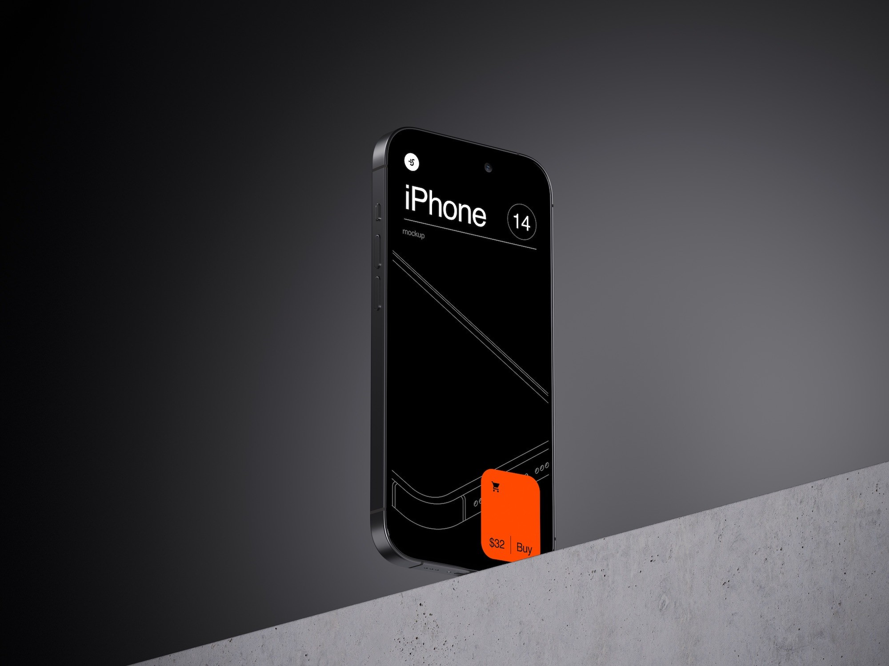

case study · 5 min read
LOMO Track
Making tanker operations easier to monitor on the move.

The product
Making complex trip information easier to understand
LOMO Track is a mobile application for operations teams monitoring tanker trips, vehicle movement, and connected IoT lock systems. The product brings trip status, source and destination, travelled distance, live GPS vehicle location, route deviations, and operational exceptions into a unified mobile experience.
My role was to organize this dense operational information into a clear, scannable flow that operators could immediately interpret while monitoring high-stakes transport journeys in real time.
Problem statement
The challenge wasn't showing more data. It was helping users understand what matters.
A fleet-tracking ecosystem contains dozens of critical data points at the exact same moment: vehicle status, trip info, designated routes, GPS telemetry, actual distance, hardware tamper sensors, and driving safety events.
Displaying all of this equally on a mobile screen overwhelmed users and made scanning almost impossible during rapid field checks. To cut through the noise, I anchored the experience around three core operational questions:
- Where is the vehicle right now?
- Is the trip progressing normally along its approved route?
- Has an exception occurred that requires urgent attention?
These three questions established what should appear first on the primary screens, and what detail could remain secondary when drilling down.
Architecture & system flow
Designing around the journey, not individual screens
Instead of treating Home, Trips, Tracking, and Exceptions as disconnected screens, I mapped the entire experience to the natural mental model an operations user follows when checking a vehicle:
The operational task flow for operators was structured sequentially:
Core UX principles
- Give trip context before detailed map information: A map without trip context is just coordinates; context tells the operator what those coordinates mean.
- Show essentials first: Allow operators to drill deeper on demand rather than front-loading every telemetry metric.
- Keep expected movement visually distinct from abnormal movement: Forward and reverse routes are quiet; deviations stand out prominently.
- Keep exceptions connected to the trip & location: Harsh braking or tamper alerts are useless in an isolated notification tray—they belong on the map where they occurred.
Design solutions
Key design decisions that transformed scannability
1. Trip context before map inspection
Tracking products frequently default to an edge-to-edge map. But operators primarily need to know: Which truck? What load? How far along?
I structured the Home / Current Trip screen as a compact executive trip summary with a clear information hierarchy:
- Vehicle ID & Operational Status
- Source Location
- Destination Target
- Distance Progress (e.g., 96 KM Actual)
- Consignment / Invoice Reference
- Action: Open Live Tracking Map
2. Turning the map into an operational decision tool
A pin on a map answers only one question. The more important question is: Is this vehicle where it was authorized to be?
The tracking view connects live coordinates with the scheduled journey through three distinct visual states:
- Forward Route: Expected, authorized path toward destination.
- Reverse Route: Return journey following verified waypoints.
- Route Deviation: Standout warning showing movement outside geo-fenced corridors.
3. Connecting exceptions directly to the active route
When harsh driving occurs (HARSH_BRAKING, HARSH_MANOEUVRING, HARSH_ACCELERATION), operators need to see the incident in the context of the journey.
Event + Location + Trip = Context
By embedding an interactive bottom sheet directly on the tracking view, operators can inspect event counts, timestamps, and road conditions without losing the active vehicle in view.
4. Trip Playback for incident investigations
When an audit occurs, current position does not explain what happened 2 hours prior. Trip Playback provides an intuitive player control bar (Play, Pause, Scrub, Reset, and Speed multipliers: 1x, 2x, 5x) to review historical vehicle telemetry effortlessly.
Pausing to reflect
What this project changed in the way I design
Working on LOMO Track pushed me beyond aesthetic mobile design. The real difficulty wasn't creating another sleek dark-mode UI—it was understanding how hardware locks, GPS sensors, telemetry packets, trip schedules, and field operations interact.
"Tracking tells users where the vehicle is. Good UX helps them understand what is happening."